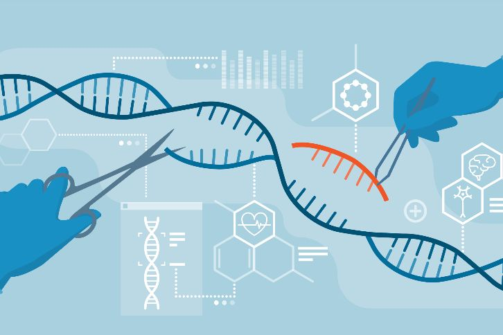

15 de febrero 2023
crispr
CRISPR es uno de los mayores avances en el campo de la terapia genética en los últimos años. Para quien no sepa qué es esta tecnología de edición genética básicamente permite a los científicos cortar y pegar fragmentos específicos de ADN con precisión molecular. De esta forma los científicos pueden corregir o eliminar mutaciones genéticas que causan enfermedades, entre otras muchas aplicaciones.
Leer Mas..

15 de febrero 2023
Chat gpt
ChatGPT es un prototipo de chatbot de inteligencia artificial desarrollado en 2022 por OpenAI que se especializa en el diálogo. El chatbot es un gran modelo de lenguaje ajustado con técnicas de aprendizaje tanto supervisadas como de refuerzo. Se basa en el modelo GPT-3.5 de OpenAI, una versión mejorada de GPT-3.
Leer Mas..
15 de febrero 2023
snapdragon 8 gen 2
Este año nos hemos adelantado al calendario habitual y Qualcomm ha sacado su artillería dos meses antes de tiempo. Ha sido en Hawaii, algunas cosas no cambian, donde la firma norteamericana ha dado a conocer el chip que ya era todo un secreto a voces. El nuevo Qualcomm Snapdragon 8 Gen 2 ya es oficial y mucho ojo con él porque viene a tope de todo.
Leer Mas..

15 de febrero 2023
inteligencia artificial
Pero una semana después, cambié de opinión. Sigo fascinado e impresionado con el nuevo Bing y la tecnología de inteligencia artificial que lo impulsa (desarrollada por OpenAI, el creador de ChatGPT). Pero también estoy profundamente inquieto, incluso asustado, por las habilidades emergentes de esta IA.
Me queda claro que en su forma actual, la inteligencia artificial construida dentro de Bing - a la que llamaré Sydney por razones que explicaré a la brevedad - no está lista para contacto humano. O tal vez los humanos no están listos para ella.
Leer Mas..